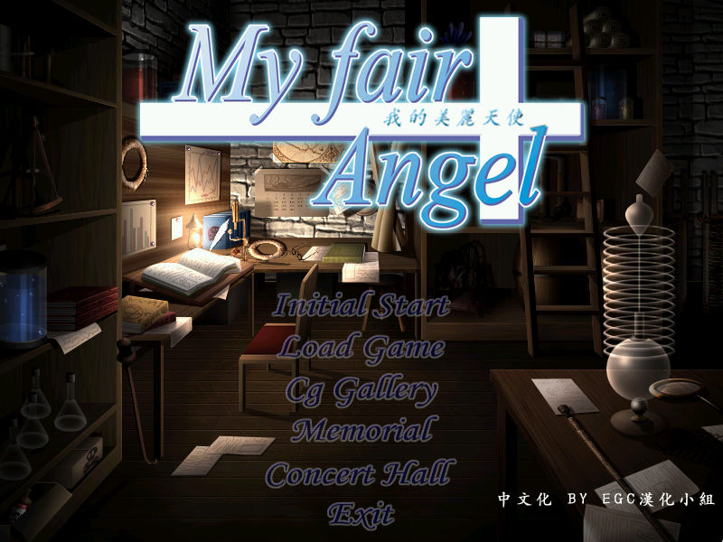
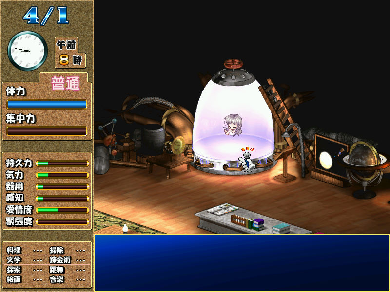

名稱：我的美麗天使／H美少女夢工廠 (My fair Angel，簡中版) 簡介：日本Studio e.go 2001年出品的美少女養成遊戲 [待補]。

備註：本版為簡中漢化版，請執行egcmfa.exe或CRondo.exe開始遊戲。 保護：光碟（漢化版已免光碟） 備註：需執行audio.EXE和SPCHAPI.EXE（MS Speech API 3.0），以安裝遊戲必要的程式庫。 備註：在繁中系統上執行時，啟動選單會顯示亂碼，但進入遊戲後便不會。